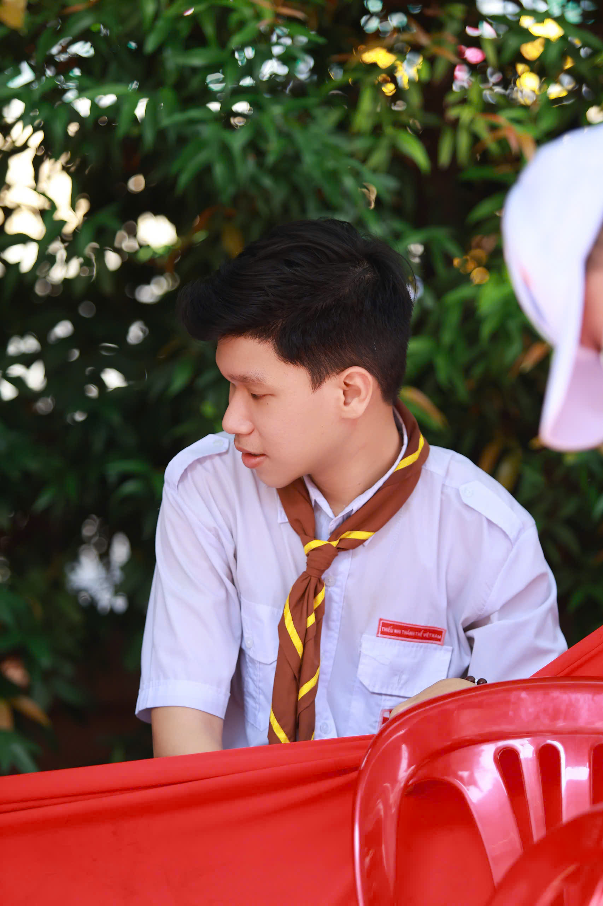

Xây nền thật chắc.
Củng cố lập trình game, thuật toán và cấu trúc dữ liệu; làm quen sâu hơn với Game Engine và quy trình phát triển. Đưa kiến thức vào dự án cá nhân và bài toán thực tế.
01Xin chào, mình là
Mình thích biến những ý tưởng còn nằm trên giấy thành trải nghiệm mà mọi người có thể chạm vào, chơi thử và nhớ đến.

TÒ MÒ HÔM NAY, THẾ GIỚI NGÀY MAI
Mình là sinh viên năm 3 ngành Công nghệ thông tin tại Trường Đại học Giao thông Vận tải TP. Hồ Chí Minh. Quê ở Đồng Nai, hiện mình học tập và tìm cơ hội phát triển tại TP. Hồ Chí Minh.
Mình dành thời gian rèn luyện lập trình, tư duy phân tích và cách giải quyết vấn đề. Điều mình muốn theo đuổi là phát triển game: tìm hiểu cách một ý tưởng thành hình, rồi chia sẻ trải nghiệm ấy với mọi người.
Củng cố lập trình game, thuật toán và cấu trúc dữ liệu; làm quen sâu hơn với Game Engine và quy trình phát triển. Đưa kiến thức vào dự án cá nhân và bài toán thực tế.
01Trở thành Game Developer chuyên nghiệp, biết tối ưu hiệu năng, thiết kế kiến trúc linh hoạt và phối hợp tốt với nhiều vai trò để làm nên sản phẩm chất lượng.
02Mong muốn học quy trình làm game thực tế, tích lũy kinh nghiệm làm việc nhóm và phát triển kỹ năng chuyên môn trong ngành.
03Mình tin kỹ năng tốt được xây từ những lần thử, sai và làm lại.
Một vài cột mốc trên hành trình học và làm.
Theo học ngành Công nghệ thông tin tại Trường Đại học Giao thông Vận tải TP. Hồ Chí Minh.
Tham gia các đồ án về kiến trúc, phân tích hệ thống và phối hợp làm việc nhóm.
Trau dồi tư duy thiết kế và dành thời gian thực hành qua các dự án cá nhân.
Mỗi dự án là một lần học thêm điều mới, từ kỹ thuật đến cách nhìn một vấn đề.
Ứng dụng desktop theo dõi và phân tích lưu lượng mạng theo thời gian thực, với dashboard băng thông, giám sát gói tin và thông tin mối đe dọa.
Xem mã nguồnWebsite giới thiệu hành trình học tập, kỹ năng, dự án và định hướng nghề nghiệp của mình.
Xem mã nguồnNẠP LẠI NĂNG LƯỢNG
Lúc rảnh mình thường chơi game, đi dạy giáo lý và dành thời gian đi chơi cùng mọi người. Những khoảng dừng này giúp mình giữ sự tò mò và cân bằng.
SẴN SÀNG HỌC HỎI VÀ BẮT ĐẦU